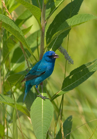

Welcome to Backyard Birds, your peaceful guide to observing the beauty of nature right outside your window. From early morning songs to evening flights, our mission is to help you discover and appreciate the feathered friends who share your environment.
Whether you’re an experienced birder or just beginning your journey, we provide photos, tips, and educational insights about birds from all across North America. You’ll learn to identify common species, recognize their calls, and create bird-friendly habitats.
Backyard Birds is built by bird lovers for bird lovers. Our goal is to foster connection, curiosity, and conservation through shared experiences and community stories.

Visit our Tributes page to see beautiful photographs and stories shared by backyard birdwatchers everywhere.